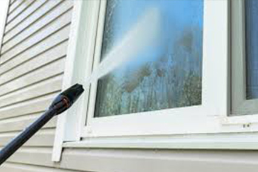
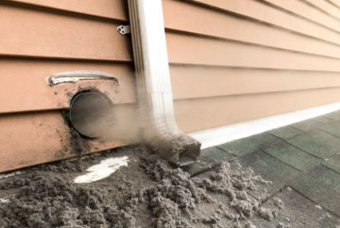
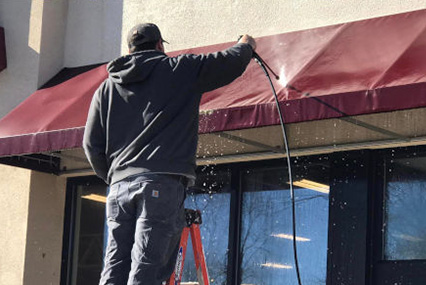
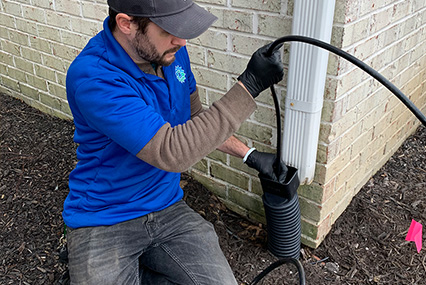
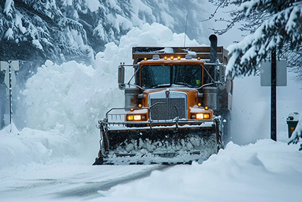

Residential & Commercial Power Washing Services in Bergen County, NJ
A complete range of professional exterior cleaning services for homeowners and businesses throughout Saddle Brook, Rochelle Park, Paramus, and all of Bergen County. From delicate stucco to heavy commercial concrete — the right technique, the right equipment, every time.

Soft House Wash Stucco · Stone · Siding
Gentle yet effective low-pressure cleaning removes years of algae, mold, mildew, and oxidation from your home's exterior without damaging the surface. Restores curb appeal and protects your investment.
Soft House Wash Details →
Driveway, Patio & Sidewalk Cleaning
High-powered pressure washing lifts oil stains, tire marks, algae, and ground-in grime from concrete, asphalt, and pavers. Your driveway, walkway, and patio will look like new.
Driveway Cleaning Details →
Deck & Paver Cleaning and Sanding
We revitalize weathered wood decks and tired brick pavers — removing algae, moss, UV oxidation, and organic growth, then re-sanding paver joints for a polished, finished result.
Deck & Paver Details →
Gutter Cleaning
Clogged gutters lead to water damage, foundation problems, and landscape erosion. We clear leaves, debris, and buildup from your gutters and downspouts, restoring proper drainage.
Gutter Cleaning Details →
Commercial Building Wash
Tailored pressure washing for retail storefronts, office buildings, warehouses, and more. A clean exterior projects professionalism and attracts customers.
Commercial Wash Details →
Exterior Window Cleaning
Crystal-clear windows transform any property. Streak-free cleaning removes dirt, grime, water deposits, and buildup for a spotless, professional finish.
Window Cleaning Details →Solar Panel Cleaning
Dirty solar panels lose efficiency. Our safe, low-pressure cleaning removes dust, pollen, bird droppings, and grime to restore maximum energy output.
Solar Panel Details →
Dryer Vent Cleaning
A clogged dryer vent is a fire hazard. We safely remove lint, debris, and blockages — improving drying efficiency, reducing energy costs, and protecting your home.
Dryer Vent Details →
Awning Cleaning
Sun, rain, and biological growth take a toll on awnings. We safely clean fabric and metal awnings — removing stains, mold, and discoloration to extend their lifespan.
Awning Cleaning Details →
Perimeter Downspout Jetting
High-pressure jetting thoroughly clears downspouts of clogs and debris, preventing water backup and protecting your foundation from costly water damage.
Downspout Jetting Details →
Christmas Light Installation
Skip the ladder. We handle professional installation and removal of Christmas lights and festive displays — magic without the stress.
Christmas Lights Details →
Snow Removal
Reliable winter snow removal for driveways, walkways, parking lots, and commercial properties throughout Bergen County, NJ — keeping your property safe and accessible.
Snow Removal Details →